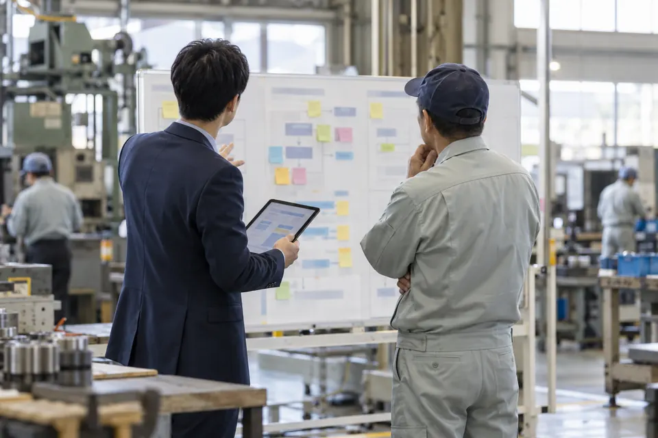

福井でFDEを頼むなら｜中小企業のAI導入を社内で進める「右腕」の選び方

結論FDE（Forward Deployed Engineer、フォワード・デプロイド・エンジニア）は、お客さまの会社の中に入り、現場の仕事を見ながら、AIやソフトウェアが実際に使われるところまで自分で作って面倒を見る人です。案を出して帰る人や、言われた作業だけをこなす人とは、関わり方が違います。福井の中小企業なら、AIを進める人を社員として雇うより、月に何度か会社に入る外部のFDEに頼むほうが始めやすいと、私たちは考えています。頼む前には、この記事の5つのことを確かめてください。とくに大事なのは「現場に来るか」「自分で手を動かすか」「いつ手を離すか」です。AI よろづやの「AXのみぎ腕」は、福井の会社に入るFDEのサービスです。
この記事の要点
- FDEは、会社の中に入り、何を作るかを現場で決め、自分で作り、使われるまで残る人。もとは米国のソフトウェア会社が使い始めた肩書き
- AIを使っていない中小企業の理由の1位は「活用する業務がイメージできていない」（63.4%）、2位は「推進する人材が不足」（40.0%）。FDEが手を貸せるのはこの2つ
- 福井の有効求人倍率（就業地別）は1.72倍で全国最高（2026年8月）。人を採りにくい福井では、AIを進める人を社員として雇うより、月に数回入る外部のFDEのほうが始めやすいと考えます。頼む前に確かめることは5つ。とくに「現場に来るか・手を動かすか・いつ手を離すか」
- ふくい産業支援センターの無料のDX専門家派遣と組み合わせると、最初の一歩の負担を抑えられる
FDEとは：会社の中に入る「前線の作り手」
「Forward Deployed」は「前線に配置された」という意味です。FDEは、お客さまの会社という前線に出て、その場で作る人を指します。
この肩書きを広めたのは、米国のソフトウェア会社パランティアです。米国の投資会社アンドリーセン・ホロウィッツ（a16z）の解説によると、同社は2011年、製品の導入や他の仕組みとのつなぎ込みを担う技術者（solutions engineers、integration engineers）に「forward-deployed engineer」の肩書きを付けました。
いまFDEが注目されているのは、AIが理由です。AIの道具は、入れただけでは現場で使われないことがよくあります。社内のデータや書類の形、仕事の順番に合わせて、どこで何をAIに任せるかを決め、AIが間違えたときに人が気づける手順まで組まないと、試しただけで止まりがちです。そこでAIの開発会社も、お客さまの会社に技術者を送り込む形を取り始めました。OpenAIは2026年5月、企業の中でAIを使った仕組みを作る会社「OpenAI Deployment Company」を立ち上げると発表しました。Anthropicも同じ月に、投資会社と組んで企業向けのAIの支援会社を作ると発表し、業種を問わず中堅の企業と組むとしています。AIで得をしうる会社の例に挙がったのは、地域の銀行や中堅の製造業、地域の医療機関です。中に入ってAIを動かす支援を、地域の会社にも広げようとする動きが出てきました。
FDEの仕事は、次の4つに分けられます。
| FDEの仕事 | 中身 |
|---|---|
| 現場に入る | 会社に通い、どの仕事にどれだけ時間がかかっているかを、働く人と一緒に見る |
| 何を作るか決める | 頼まれたものをそのまま作るのでなく、効く仕事を見つけて順番を決める |
| 自分で作る | AIに任せる仕組み・手順書・社内向けの道具を、自分の手で作る |
| 使われるまで残る | 社内の人が自分で回せるようになるまで直し続け、最後に手を離す |
似た支援との違い
外の人に仕事を頼む形は、FDEのほかにもあります。違いは「誰が何を決めるか」と「どこで終わるか」です。次の表は、それぞれのよくある形を並べたものです（中身は頼む先によって違います）。
| 頼み方 | 何を決めるか | 自分で作るか | 終わり方 |
|---|---|---|---|
| 提案書や報告書を作る支援 | 外の人が案を出す | 作らない（社内で実行する） | 提案書を納めて終わる |
| 客先常駐（SES）・人材派遣 | 決まった範囲の作業を受ける | 作る | 契約の期間が終われば終わる |
| 受託開発（システム会社に作ってもらう） | 会社が仕様を決める | 作る | 納品で終わる（その後の改修や保守は別の契約になることが多い） |
| 公的な専門家の派遣（中小機構のハンズオン支援など） | 専門家が助言し、会社が自分で進める | 作らない（実務の代行はしない） | 決まった回数・期間で終わる |
| ツールの販売・導入 | 入れるツールが先に決まっている | 初期設定まで | 設定が終われば終わる |
| 社員として採用する | 社内で決める | 作る | 終わりはない（育成と定着が要る） |
| FDE | 現場を見て、一緒に決める | 作る | 社内で回るようになったら手を離す |
FDEと客先常駐は、どちらも会社の中で手を動かす点で似ています。違いは、客先常駐が多くの場合「足りない人手を埋める」ために決まった作業を受けるのに対し、FDEは「何を作れば仕事が楽になるか」から一緒に考える点です。受託開発は、作るものを会社が先に決めて頼む形です。何を作ればよいかが決まっていない段階では、頼みにくい形でもあります。公的な専門家の派遣は、費用を抑えて助言を受けられるのが強みです。中小機構のハンズオン支援は、専門家が数か月から10か月ほど助言を続ける制度ですが、実務の代行はしないと定めています。仕組みを自分の手で作るところまで任せたいなら、FDEの出番です。
福井の中小企業にFDEが合う理由
中小企業がAIを使わない理由は、お金より先に「何に使うか」と「誰が進めるか」にあります。
2026年版中小企業白書の概要資料（中小企業庁調査室、2026年6月）によると、省力化の取り組みでAIを活用していない中小企業に理由を聞くと、いちばん多いのは「活用する業務がイメージできていない」で63.4%、次が「活用を推進する人材が不足している」で40.0%でした。予算の不足は13.8%です（白書が引用する民間の調査）。
福井では、2つ目の「人がいない」がとくに重くのしかかります。厚生労働省の発表では、2026年8月の有効求人倍率（就業地別）は、全国の1.18倍に対し、福井県は1.72倍で全国でいちばん高い数字でした。AIの担当者を新しく採るどころか、いまの仕事の人手を集めるのも難しい状況です。
1つ目の「何に使うか分からない」は、現場の仕事を見ると埋まりやすくなります。2つ目の「進める人がいない」は、社内に人を育てる時間がない会社ほど深刻です。現場に入って使い道を見つけ、自分で作って進めるFDEは、この2つに同時に手を貸せる役です。
ただ、AIの導入を一から進められる人を社員として雇うのは、中小企業には難しいことが多いものです。そうした人を探すのは簡単ではなく、見つかっても、1社に1人を常に置くほどの仕事量がない会社もあります。月に何度か会社に入る外部のFDEなら、仕事量に合わせて関わる深さを決められます。福井県の「ふくいプロフェッショナル人材総合戦略拠点」は、人材会社と組んで、副業・兼業の人材とのマッチングも支えています。社内に入って進める人を、副業・兼業で迎えるのも1つの道です。
福井でFDEを頼むときに確かめる5つのこと
FDEを名乗る支援でも、関わり方はさまざまです。頼む前に、次の5つを聞いてください。
| 確かめること | 聞き方の例 | FDEならこう答える |
|---|---|---|
| 1. 現場に来るか | 「会社に来てもらえますか。月に何回ですか」 | 現場に通う回数を、仕事の量に合わせて決める |
| 2. 自分で手を動かすか | 「仕組みや手順書は誰が作りますか」 | 自分で作り、社内の人と一緒に直す |
| 3. 何を作るかを一緒に決めるか | 「最初に何をしますか」 | 業務の棚卸しから始め、効く仕事を1つに絞る |
| 4. 特定のツールに縛られないか | 「使うAIの道具は決まっていますか」 | 会社の業務と予算に合わせて選ぶ |
| 5. いつ手を離すか | 「社内だけで回せるようになるのは、いつ頃ですか」 | 社内の担当者が回せる状態を終わりの目印にする |
いちばん大事なのは、5の「いつ手を離すか」です。FDEの目的は、外の人がいなくても社内で回る状態を作ることです。終わりの目印を最初に決めておかないと、外の人に頼り続けることになります。
3の「何を作るか」の決め方は、「業務の棚卸しのやり方」にまとめています。AIを社内で使うときの決まりは「生成AIの社内ルールの作り方」を、福井の製造業での使い道は「福井の製造業で生成AIをどう使うか」を見てください。
福井の会社向けのFDE：AI よろづやの「AXのみぎ腕」
AI よろづやの「AXのみぎ腕」は、福井の中小企業に入るFDEのサービスです。月額で会社に入り、業務の棚卸しから仕組みづくり、社内に根づかせるところまでを一緒に進めます。関わり方は4つです。
- 現場に行く：月に数回、会社に伺い、現場の方と一緒に手を動かします
- 定例で決める：オンラインの定例で、進み具合と次に任せる仕事を決めます
- いつでも聞ける：日々の「これAIでできる？」には、チャットで答えます
- 形を残す：毎月、やったことと次の一手を記録にまとめてお渡しします
訪問の回数や関わる深さは、会社の規模と目標に合わせて決めます。まず1つの業務から、3か月だけ試す始め方もできます。中小企業の仕事量に合わせて、FDEの関わり方を、月に数回の訪問とオンラインの定例・チャットの組み合わせに組み直したのが「AXのみぎ腕」です。福井の会社に絞っているので、現場に通いやすく、ふくい産業支援センターなど県内の窓口とも組み合わせやすくなります。
作るものの例を1つ挙げます。AI よろづやのデモでは、見本の請求書30枚の読み取り・ファイル名の付け直し・表への転記までを、AIで約5分で終えました。手作業なら約2時間かかる想定の作業です（詳しくは「請求書30枚の転記を、約5分で」）。FDEは、こうした仕組みを会社の書類と仕事の流れに合わせて作り、間違いを人が確かめる手順まで組み込みます。
無料の窓口と組み合わせる
FDEに頼む前に、福井の無料の窓口で考えを整理しておくこともできます。
| 窓口 | 中身 | 時期・状況 | 連絡先 |
|---|---|---|---|
| DX専門家派遣（ふくい産業支援センター） | 福井県内に事務所のある事業者に、ITの専門家を無料で最大3回派遣する | 受付は2026年4月1日〜12月25日。募集は50社まで | ベンチャー・DX推進部 0776-67-7416 |
無料の派遣で課題を整理し、続けて社内で作り込む段階からFDEに入ってもらう、という分け方もできます。福井で使える窓口と補助金の全体は「福井の中小企業のAI活用ガイド2026」にまとめています。
まとめ
- FDEは、会社の中に入り、何を作るかを現場で決め、自分で作り、社内で回るようになるまで残る人
- 中小企業がAIを使わない理由の上位は「活用する業務がイメージできていない」（63.4%）と「推進する人材が不足している」（40.0%）。FDEはこの2つに同時に手を貸せる
- 福井の中小企業なら、AIを進める人を社員として雇うより、月に数回入る外部のFDEのほうが始めやすいと考えます
- 頼む前に「現場に来るか・手を動かすか・何を作るかを一緒に決めるか・ツールに縛られないか・いつ手を離すか」の5つを確かめる
よくある質問
FDEと客先常駐（SES）は何が違いますか？
どちらも会社の中で手を動かしますが、客先常駐は、多くの場合、会社が決めた作業を受けて人手を埋める形です。FDEは、現場を見て「何を作れば仕事が楽になるか」から一緒に決め、社内で回るようになったら手を離します。
社内にエンジニアがいない小さな会社でも頼めますか？
頼めます。FDEが入る会社に、エンジニアがいる必要はありません。AIの道具を日々使う担当者を社内に1人決めておくと、FDEが手を離したあとも続けやすくなります。
福井の会社でなくても頼めますか？
AI よろづやの「AXのみぎ腕」は、会社に伺って現場で手を動かすことを前提にしているため、福井県内の会社を中心にお受けしています。県外の会社は、伺える範囲かどうかを相談のときにお知らせします。
出典
- 中小企業庁調査室「2026年版中小企業白書・小規模企業白書の概要」（2026年6月、RIETI BBLセミナー資料）
- 厚生労働省「一般職業紹介状況（令和8年8月分）について」（2026年10月2日）
- a16z「Forward-deployed Job Titles」（2026年1月27日）
- OpenAI「OpenAI launches DeployCo to help businesses build around intelligence」（2026年5月11日）
- Anthropic「Building a new enterprise AI services company with Blackstone, Hellman & Friedman, and Goldman Sachs」（2026年5月4日）
- 中小企業基盤整備機構「ハンズオン支援（専門家派遣）」
- ふくい産業支援センター「DX専門家派遣事業」
- 福井県「ふくいプロフェッショナル人材総合戦略拠点」
監修：静木銀蔵（合同会社BWH総合研究所 代表）
About
AI よろづやについて
AI よろづやは、福井の会社のAI活用を、共に前に進めるサービスです。研修も、制作も、現場の推進も、地元でまとめて引き受けます。運営は合同会社BWH総合研究所です。
ご相談は無料です。自社の業務のどこにAIが使えるか、どのサービスが合うかから一緒に考えます。